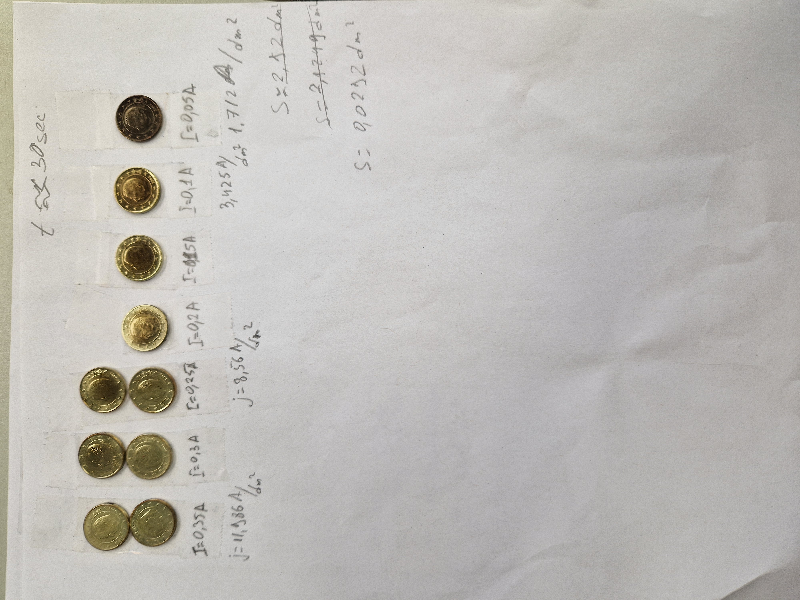
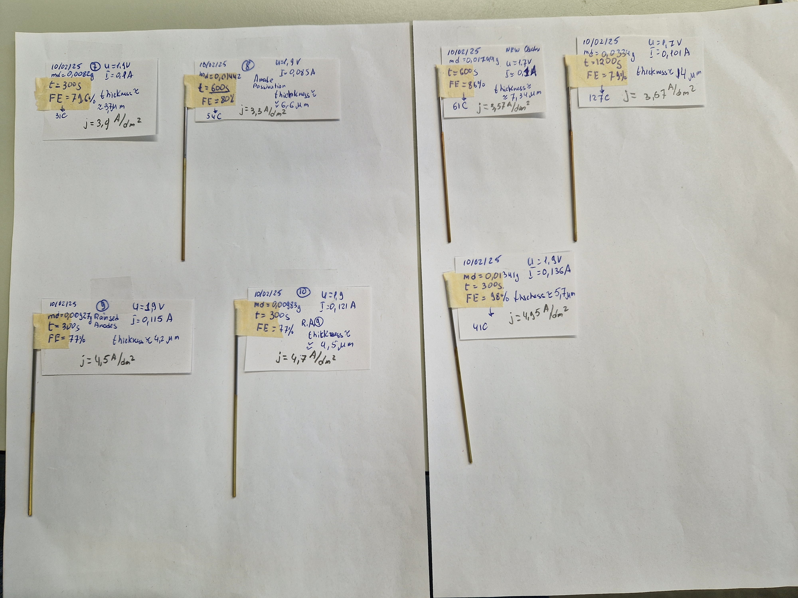
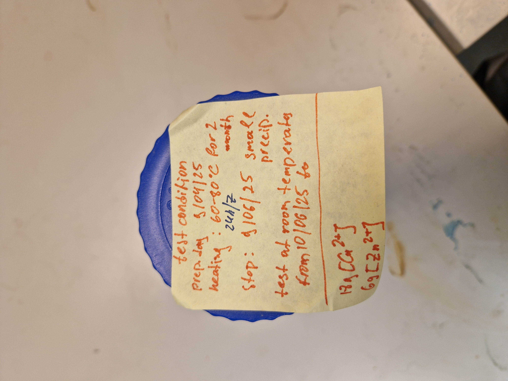
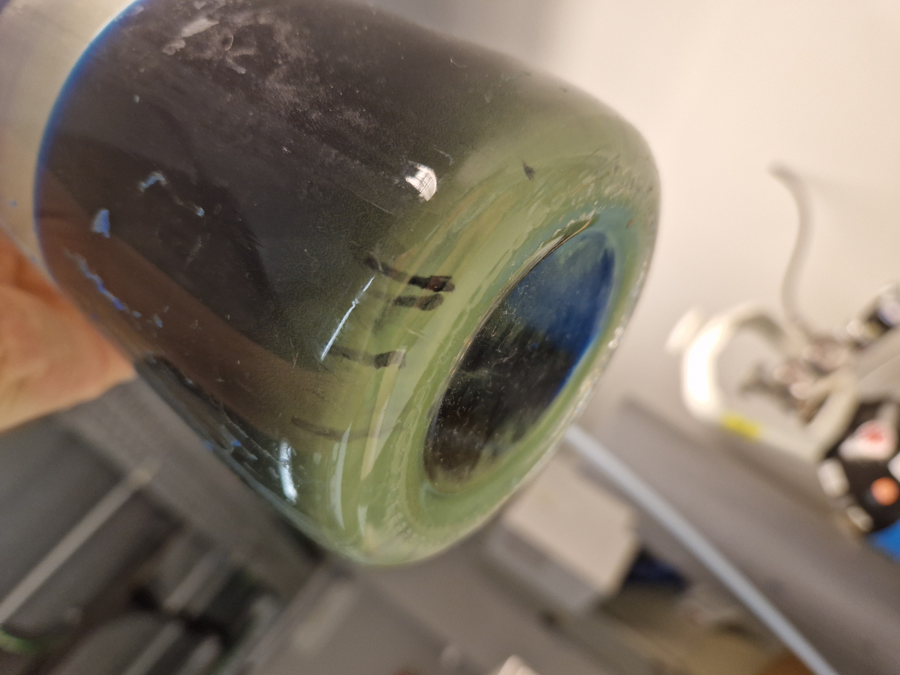
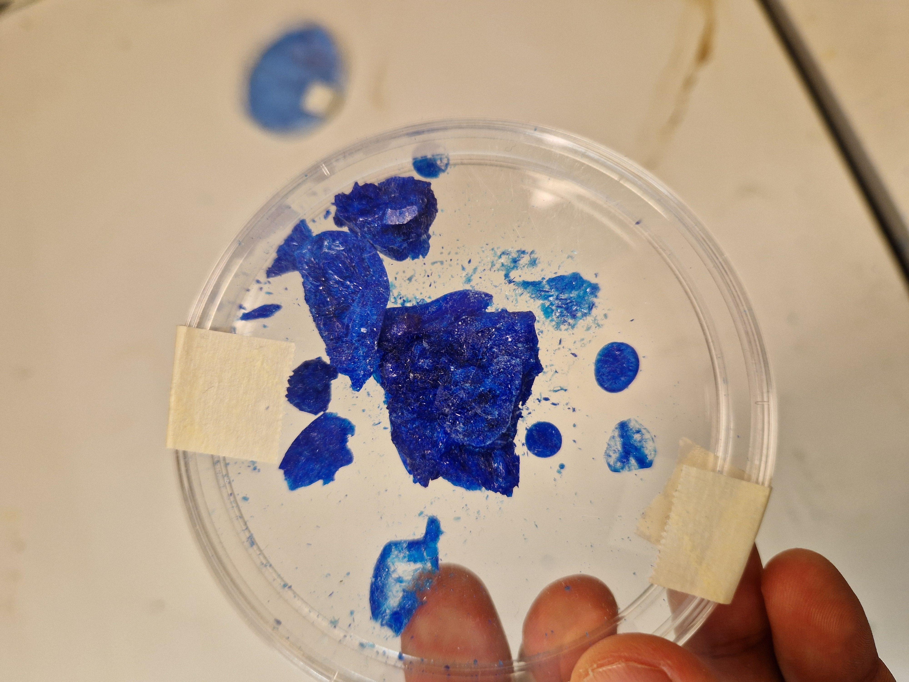

A focused domain of my experimental R&D profile, rooted in metallurgy,
materials science, coatings, nanomaterial synthesis, surface modification,
and functional material behavior.
Domain Scope
This domain includes metallurgy and materials science, coatings, surface modification,
electrochemical deposition, materials and nanomaterial synthesis, metal oxide systems,
polymer-based systems, and functional material behavior.
It connects material preparation, surface response, formulation, aging, stability,
instrumental characterization and analysis — including SEM, HR-TEM, XRD, FTIR,
and UV–Vis spectroscopy where relevant — and the practical search for working
material-development corridors.
Focus Areas
Brass-like Electrodeposition
A preserved experimental trace related to non-cyanide brass-like coating trials
on coin-like and steel cord samples. This direction connects electrochemical
formulation, copper/zinc-based deposition behavior, substrate geometry, and
long-term surface observation.
An experimental direction focused on plasma-assisted formation of nanomaterial
systems, especially in aqueous media. This direction connects material synthesis
with plasma, RF, high-voltage design, and process observation.
Status: in development / experimental synthesis corridor.
Polymer / Nanomaterial Functional Systems
Ongoing work with water-based polymer systems and nanomaterial dispersions,
including water-soluble polymers such as PVA as carriers, binders, or film-forming
matrices. A key direction is the transition from water-processable systems toward
less soluble or water-insoluble functional films.
Status: ongoing direction / functional film-development corridor.
Example: Brass Electrodeposition Basis
One experimental trace in this domain is a brass-like electrodeposition electrolyte
concept used for coating coin-like and steel-based samples. The system is not presented
as a finalized commercial product, but as a preserved working basis developed through
practical formulation, deposition trials, observation, and iteration.
Positioning:
this is an early-stage material-development trace. It shows practical work with
electrochemical coating, copper/zinc-based deposition behavior, surface appearance,
substrate response, and process refinement under laboratory conditions.
Concrete Traces: Brass-like Electrodeposition
Selected preserved experimental traces from brass-like electrodeposition work.
These traces show process variation, sample response, and long-term observation
after storage. They are presented as experimental material-development traces,
not as finalized coating technology.
Coin-like current-density series

Coin-like samples from brass-like electrodeposition trials under different
current and current-density conditions. The preserved laboratory notation
records the applied current, current density, and short deposition time.
This trace shows coin-like metal samples obtained under different current
and current-density conditions during short brass-like electrodeposition
trials. It is used here to preserve the visible coating response, surface
appearance, and sample-to-sample variation under controlled electrochemical
input.
This block is presented as a visual current-density trace, not as a full
electrochemical formulation or deposition protocol.
Status: preserved current-density series / visual coating-response trace.
Steel-cord coating trace with charge, mass, and thickness estimation

Steel-cord substrate traces from brass-like electrodeposition trials. The
preserved laboratory notation includes current, voltage, deposition time,
Coulomb counting, coating mass, Faradaic efficiency, and coating-thickness
estimation.
This trace extends the brass-like electrodeposition work from coin-like
samples to a steel-cord substrate. The image preserves a parameter-rich
experimental record, including applied current, voltage, deposition time,
charge passed through the system, coating mass, Faradaic efficiency, and
estimated coating thickness.
Coulomb counting was used as a practical tracking method to connect the
electrochemical input with the observed coating mass and the later estimation
of coating thickness.
The image is presented as a preserved electrochemical parameter trace, while
the full bath composition and detailed deposition protocol remain outside the
public page.
Electrolyte condition, aging, and salt-residue trace

Electrolyte test condition: the preserved working solution under laboratory
observation.

Electrolyte aging trace: visual state of the solution after longer-term
observation.

Salt / residue trace after water evaporation, preserved as a material record
of the electrolyte system.
This compact block preserves three connected views of the brass-like
electrodeposition electrolyte system: the working test condition, the later
aging state of the electrolyte, and the salt / residue trace obtained after
water evaporation. The electrolyte aging / stability observation was carried
out under aeration in the same elevated-temperature testing regime for
approximately two months.
The purpose of this block is to show the electrolyte as a material-development
trace over time: from active testing, through accelerated aerated aging
observation, to a residual solid-state trace. It is not presented as a
complete electrolyte formulation or preparation protocol.
Copper-borate-based polymer material trace. The foreground material trace
belongs to Functional Materials; the background setup points to the
Field-Assisted Methods domain.
This trace shows a copper-borate-based polymer material / coating sample
within a functional-materials development corridor. It is presented as a
visual research trace, not as a complete formulation, protocol, or setup
disclosure.
Cross-link: this material trace connects Functional Materials with
Field-Assisted Methods through setup-development and RF-assisted
experimental-system background.
See Field-Assisted Methods.
Relation to Other Domains
This domain connects with physical and field-assisted methods where plasma, RF, PEF,
and high-voltage prototype design can act as experimental tools for synthesis,
treatment, surface activation, or process exploration.
It also connects with AI-assisted R&D Workflows,
where experimental traces, formulations, failures, observations, and open directions
can be structured and preserved.